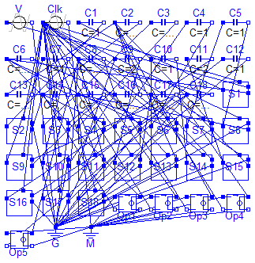
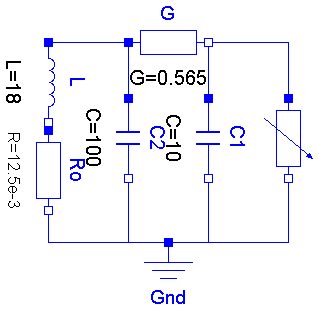
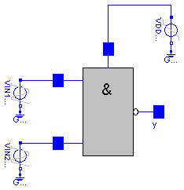

This package contains examples for the analog electrical packages.

The example Cauer Filter is a low-pass-filter of the fifth order. It is realized using a switched-capacitor network. The voltage source V is the input voltage, and the Op5.p2.v is the filter output voltage. The pulse response is calculated.
The simulation end time should be 2e5. Please plot the output voltage Op5.p2.v.
encapsulated model CauerFilter "CAUER Switched Capacitor Filter"
import Modelica.Electrical.Analog.Basic;
import Modelica.Electrical.Analog.Sources;
import Modelica.Electrical.Analog.Examples.Utilities;
Sources.TrapezoidVoltage V(
V=1,
startTime=499,
rising=1,
width=1500,
falling=1,
period=50000,
nperiod=1);
Sources.TrapezoidVoltage Clk(
V=5,
rising=5,
width=500,
falling=5,
period=1000);
Basic.Capacitor C1(C=1);
Basic.Capacitor C2(C=1.55);
Basic.Capacitor C3(C=1.527);
Basic.Capacitor C4(C=1);
Basic.Capacitor C5(C=1);
Basic.Capacitor C6(C=1.018);
Basic.Capacitor C7(C=1);
Basic.Capacitor C8(C=1.644);
Basic.Capacitor C9(C=2);
Basic.Capacitor C10(C=1);
Basic.Capacitor C11(C=2);
Basic.Capacitor C12(C=1);
Basic.Capacitor C13(C=9.862);
Basic.Capacitor C14(C=7.23);
Basic.Capacitor C15(C=10.06);
Basic.Capacitor C16(C=10.23);
Basic.Capacitor C17(C=12.76);
Basic.Capacitor C18(C=8.676);
Utilities.RealSwitch S1;
Utilities.RealSwitch S2;
Utilities.RealSwitch S3;
Utilities.RealSwitch S4;
Utilities.RealSwitch S5;
Utilities.RealSwitch S6;
Utilities.RealSwitch S7;
Utilities.RealSwitch S8;
Utilities.RealSwitch S9;
Utilities.RealSwitch S10;
Utilities.RealSwitch S11;
Utilities.RealSwitch S12;
Utilities.RealSwitch S13;
Utilities.RealSwitch S14;
Utilities.RealSwitch S15;
Utilities.RealSwitch S16;
Utilities.RealSwitch S17;
Utilities.RealSwitch S18;
Basic.VCV Op1(gain=30000);
Basic.VCV Op2(gain=30000);
Basic.VCV Op3(gain=30000);
Basic.VCV Op4(gain=30000);
Basic.VCV Op5(gain=30000);
Basic.Ground G;
Basic.Ground M;
equation
connect(S1.n1, V.p);
connect(C8.p, C18.n);
connect(C8.p, S11.n1);
connect(C8.p, S17.n1);
connect(C8.p, Op5.p2);
connect(C2.p, C13.p);
connect(C2.p, C16.n);
connect(C2.p, S7.n1);
connect(C2.p, S13.n1);
connect(C2.p, Op3.p2);
connect(C6.p, C14.n);
connect(C6.p, S1.n2);
connect(C6.p, S5.n1);
connect(C6.p, Op1.p2);
connect(C15.n, S9.n2);
connect(C15.n, S3.n1);
connect(C15.n, Op2.p2);
connect(C14.p, C2.n);
connect(C14.p, S2.n2);
connect(C14.p, S4.n1);
connect(C14.p, Op1.n1);
connect(C15.p, S6.n2);
connect(C15.p, S8.n2);
connect(C15.p, Op2.n1);
connect(C16.p, C6.n);
connect(C16.p, C8.n);
connect(C16.p, S10.n2);
connect(C16.p, Op3.n1);
connect(C17.p, S12.n1);
connect(C17.p, S14.n1);
connect(C17.p, Op4.n1);
connect(C18.p, C13.n);
connect(C18.p, S16.n1);
connect(C18.p, S18.n1);
connect(C18.p, Op5.n1);
connect(C17.n, S15.n2);
connect(C17.n, S17.n2);
connect(C17.n, S9.n1);
connect(C17.n, Op4.p2);
connect(C1.n, S2.p);
connect(C3.p, S3.p);
connect(C3.n, S4.p);
connect(C4.p, S5.p);
connect(C4.n, S6.p);
connect(C5.p, S7.p);
connect(C5.n, S8.p);
connect(C7.p, S9.p);
connect(C7.n, S10.p);
connect(C9.p, S11.p);
connect(C9.n, S12.p);
connect(C10.p, S13.p);
connect(C10.n, S14.p);
connect(C11.p, S15.p);
connect(C11.n, S16.p);
connect(C12.p, S17.p);
connect(C12.n, S18.p);
connect(C1.p, S1.p);
connect(S1.control, Clk.p);
connect(S2.control, Clk.p);
connect(S3.control, Clk.p);
connect(S4.control, Clk.p);
connect(S5.control, Clk.p);
connect(S6.control, Clk.p);
connect(S7.control, Clk.p);
connect(S8.control, Clk.p);
connect(S9.control, Clk.p);
connect(S10.control, Clk.p);
connect(S11.control, Clk.p);
connect(S12.control, Clk.p);
connect(S13.control, Clk.p);
connect(S14.control, Clk.p);
connect(S15.control, Clk.p);
connect(S16.control, Clk.p);
connect(S17.control, Clk.p);
connect(S18.control, Clk.p);
connect(G.p, V.n);
connect(G.p, S3.n2);
connect(G.p, S4.n2);
connect(G.p, S5.n2);
connect(G.p, S7.n2);
connect(G.p, S11.n2);
connect(G.p, S12.n2);
connect(G.p, S13.n2);
connect(G.p, S14.n2);
connect(G.p, S16.n2);
connect(G.p, S18.n2);
connect(G.p, S2.n1);
connect(G.p, S6.n1);
connect(G.p, S8.n1);
connect(G.p, S10.n1);
connect(G.p, S15.n1);
connect(M.p, Op1.p1);
connect(M.p, Op2.p1);
connect(M.p, Op3.p1);
connect(M.p, Op4.p1);
connect(M.p, Op5.p1);
connect(M.p, Op1.n2);
connect(M.p, Op2.n2);
connect(M.p, Op3.n2);
connect(M.p, Op4.n2);
connect(M.p, Op5.n2);
connect(M.p, Clk.n);
/*1*/
/*2*/
/*3*/
/*4*/
/*5*/
/*6*/
/*7*/
/*8*/
/*9*/
/*10*/
/*11*/
/*12*/
/*13*/
/*14*/
/*15*/
/*16*/
/*17*/
/*18*/
/*19*/
/*20*/
/*21*/
/*22*/
/*23*/
/*24*/
/*25*/
/*26*/
/*27*/
/*28*/
/*29*/
/*CL*/
/*G*/
end CauerFilter;

Chua's circuit is the most simple nonlinear circuit which shows chaotic behaviour. The circuit consists of linear basic elements (capacitors, resistor, conductor, inductor), and one nonlinear element, which is called Chua's diode. The chaotic behaviour is simulated.
The simulation end time should be set to 5e4. To get the chaotic behaviour please plot C1.v. Choose C2.v as the independent variable.
encapsulated model ChuaCircuit "Chua's circuit, ns, V, A"
import Modelica.Electrical.Analog.Basic;
import Modelica.Electrical.Analog.Examples.Utilities;
Basic.Inductor L(L=18);
Basic.Resistor Ro(R=12.5e-3);
Basic.Conductor G(G=0.565);
Basic.Capacitor C1(C=10, v(start=4));
Basic.Capacitor C2(C=100);
Utilities.NonlinearResistor Nr(
Ga(min=-1) = -0.757576,
Gb(min=-1) = -0.409091,
Ve=1);
Basic.Ground Gnd;
equation
connect(L.p, G.p);
connect(G.n, Nr.p);
connect(Nr.n, Gnd.p);
connect(C1.p, G.n);
connect(L.n, Ro.p);
connect(G.p, C2.p);
connect(C1.n, Gnd.p);
connect(C2.n, Gnd.p);
connect(Ro.n, Gnd.p);
end ChuaCircuit;
It is a simple NPN transistor amplifier circuit. The voltage difference between R1.p and R3.n is amplified. The output signal is the voltage between R2.n and R4.n. In this example the voltage at V1 is amplified because R3.n is grounded.
The simulation end time should be set to 1e- 8. Please plot the input voltage V1.v, and the output voltages R2.n.v, and R4.n.v.
encapsulated model DifferenceAmplifier
import Modelica.Electrical.Analog.Basic;
import Modelica.Electrical.Analog.Sources;
import Modelica.Electrical.Analog.Examples.Utilities;
Sources.ExpSineVoltage V1(
V=0.2,
freqHz=0.2e9,
damping=0.1e8);
Sources.RampVoltage V2(V=15, duration=1e-9);
Sources.RampCurrent I1(I=0.16, duration=1e-9);
Basic.Resistor R1(R=0.0001);
Basic.Resistor R2(R=100);
Basic.Resistor R3(R=0.0001);
Basic.Resistor R4(R=100);
Basic.Capacitor C1(C=1e-10);
Basic.Capacitor C4(C=1e-10);
Basic.Capacitor C5(C=1e-10);
Basic.Capacitor C2(C=1e-10);
Basic.Capacitor C3(C=1e-10);
Basic.Ground Gnd1;
Basic.Ground Gnd9;
Basic.Ground Gnd3;
Basic.Ground Gnd2;
Basic.Ground Gnd6;
Basic.Ground Gnd7;
Basic.Ground Gnd8;
Basic.Ground Gnd5;
Basic.Ground Gnd4;
Utilities.Transistor Transistor1;
Utilities.Transistor Transistor2;
equation
connect(V1.n, Gnd1.p);
connect(C1.n, Gnd2.p);
connect(I1.n, Gnd7.p);
connect(C5.n, Gnd8.p);
connect(C3.n, Gnd5.p);
connect(R3.n, Gnd4.p);
connect(C2.n, Gnd3.p);
connect(C4.p, Gnd6.p);
connect(I1.p, C5.p);
connect(R1.p, V1.p);
connect(R2.p, V2.p);
connect(R4.p, V2.p);
connect(V2.n, Gnd9.p);
connect(R1.n, Transistor1.b);
connect(Transistor1.b, C1.p);
connect(Transistor1.c, C2.p);
connect(R2.n, Transistor1.c);
connect(Transistor1.e, I1.p);
connect(Transistor2.b, R3.p);
connect(Transistor2.b, C3.p);
connect(C4.n, Transistor2.c);
connect(R4.n, Transistor2.c);
connect(C5.p, Transistor2.e);
end DifferenceAmplifier;

The nand gate is a basic CMOS building block. It consists of four CMOS transistors. The output voltage Nand.y.v is low if and only if the two input voltages at Nand.x1.v and Nand.x2.v are both high. In this way the nand functionality is realized.
The simulation end time should be set to 1e-7. Please plot the input voltages Nand.x1.v, d Nand.x2.v, and the output voltage Nand.y.v.
encapsulated model NandGate
"CMOS NAND Gate (see Tietze/Schenk, page 157)"
import Modelica.Electrical.Analog.Basic;
import Modelica.Electrical.Analog.Sources;
import Modelica.Electrical.Analog.Examples.Utilities;
Sources.TrapezoidVoltage VIN1(
V=3.5,
startTime=20e-9,
rising=1e-9,
width=19e-9,
falling=1.e-9,
period=40e-9);
Sources.TrapezoidVoltage VIN2(
V=3.5,
startTime=10e-9,
rising=1e-9,
width=19e-9,
falling=1.e-9,
period=40e-9);
Sources.RampVoltage VDD(V=5, duration=1e-9);
Basic.Ground Gnd1;
Basic.Ground Gnd4;
Basic.Ground Gnd5;
Utilities.Nand Nand;
equation
connect(VDD.n, Gnd1.p);
connect(VIN1.n, Gnd4.p);
connect(VIN2.n, Gnd5.p);
connect(Nand.Vdd, VDD.p);
connect(VIN1.p, Nand.x1);
connect(VIN2.p, Nand.x2);
end NandGate;